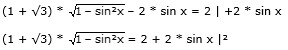
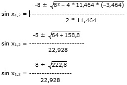

Aufgabe 242 2 cos (x + 30°) - √2 sin (x - 45°) = 2 2 * (cos x * cos 30° - sin x * sin 30°) - - √2 * (sin x * cos 45° - sin 45° * cos x) = 2 2 * (0,5 * √3 * cos x – 0,5 * sin x) - - √2 * ( 0,5 *√2 * sin x – 0,5 * √2 * cos x) = 2 √3 * cos x – sin x – sin x + cos x = 2 cos x * (1 + √3) – 2 * sin x = 2

7,464 * (1 – sin2 x) = 4 + 8 * sin x + 4 * sin2 x 7,464 – 7,464 * sin2 x) = 4 + 8 * sin x + 4 * sin2 x | +7,464 * sin2 x 7,464 = 4 + 8 * sin x + 11,464 * sin2 x |-7,464 11,464 * sin2 x + 8 * sin x – 3,464 = 0 A, B, C – Formel: A = 11,464, B = 8, C = -3,464
-8 ± 14,926 sin x1,2 = --------------- 22,928 -8 + 14,926 sin x1 = ------------- = 0,3021 --> 22,928 x1 = 17,6° oder 162,4° -8 – 14,926 sin x2 = -------------- = - 1 --> x2 = 270° 22,928 Da auf dem Weg zur Lösung quadriert wurde, könnten Lösungen hinzugekommen sein. Deswegen muss zwingend eine Probe gemacht werden. Probe: 17,6° 2 cos (17,6° + 30°) - √2 sin (17,6 - 45°) = 2 2 * 0,6743 - √2 * (-0,461) = 2 1,346 + 0,652 = 2 1,998 = 2 162,4° 2 cos (162,4° + 30°) - √2 sin (162,4 - 45°) = 2 2 * (-0,9767) - √2 * (0,8878) = 2 -1,9534 – 1,2555 = 2 -3,2089 = 2 Widerspruch, keine Lösung Lösungsmenge L = {17,6°}